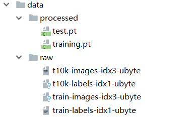

Pytorch中的数据加载
目标
- 知道数据加载的目的
- 知道pytorch中Dataset的使用方法
- 知道pytorch中DataLoader的使用方法
- 知道pytorch中的自带数据集如何获取
1. 模型中使用数据加载器的目的
在前面的线性回归模型中，我们使用的数据很少，所以直接把全部数据放到模型中去使用。
但是在深度学习中，数据量通常是都非常多，非常大的，如此大量的数据，不可能一次性的在模型中进行向前的计算和反向传播，经常我们会对整个数据进行随机的打乱顺序，把数据处理成一个个的batch，同时还会对数据进行预处理。
所以，接下来我们来学习pytorch中的数据加载的方法
2. 数据集类
2.1 Dataset基类介绍
在torch中提供了数据集的基类torch.utils.data.Dataset，继承这个基类，我们能够非常快速的实现对数据的加载。
torch.utils.data.Dataset的源码如下：
class Dataset(object):
"""An abstract class representing a Dataset.
All other datasets should subclass it. All subclasses should override
``__len__``, that provides the size of the dataset, and ``__getitem__``,
supporting integer indexing in range from 0 to len(self) exclusive.
"""
def __getitem__(self, index):
raise NotImplementedError
def __len__(self):
raise NotImplementedError
def __add__(self, other):
return ConcatDataset([self, other])
可知：我们需要在自定义的数据集类中继承Dataset类，同时还需要实现两个方法：
__len__方法，能够实现通过全局的len()方法获取其中的元素个数__getitem__方法，能够通过传入索引的方式获取数据，例如通过dataset[i]获取其中的第i条数据
2.2 数据加载案例
下面通过一个例子来看看如何使用Dataset来加载数据
数据来源：http://archive.ics.uci.edu/ml/datasets/SMS+Spam+Collection
数据介绍：SMS Spam Collection是用于骚扰短信识别的经典数据集，完全来自真实短信内容，包括4831条正常短信和747条骚扰短信。正常短信和骚扰短信保存在一个文本文件中。 每行完整记录一条短信内容，每行开头通过ham和spam标识正常短信和骚扰短信
数据实例：

实现如下：
from torch.utils.data import Dataset,DataLoader
import pandas as pd
data_path = r"data\SMSSpamCollection"
class CifarDataset(Dataset):
def __init__(self):
lines = open(data_path,"r")
#对数据进行处理，前4个为label，后面的为短信内容
lines = [[i[:4].strip(),i[4:].strip()] for i in lines]
#转化为dataFrame
self.df = pd.DataFrame(lines,columns=["label","sms"])
def __getitem__(self, index):
single_item = self.df.iloc[index,:]
return single_item.values[0],single_item.values[1]
def __len__(self):
return self.df.shape[0]
之后对Dataset进行实例化，可以跌倒获取其中的数据
d = CifarDataset()
for i in range(len(d)):
print(i,d[i])
输出如下：
....
5571 ('ham', 'Pity, * was in mood for that. So...any other suggestions?')
5572 ('ham', "The guy did some bitching but I acted like i'd be interested in buying something else next week and he gave it to us for free")
5573 ('ham', 'Rofl. Its true to its name')
3. 迭代数据集
使用上述的方法能够进行数据的读取，但是其中还有很多内容没有实现：
- 批处理数据（Batching the data）
- 打乱数据（Shuffling the data）
- 使用多线程
multiprocessing并行加载数据。
在pytorch中torch.utils.data.DataLoader提供了上述的所用方法
DataLoader的使用方法示例：
from torch.utils.data import DataLoader
dataset = CifarDataset()
data_loader = DataLoader(dataset=dataset,batch_size=10,shuffle=True,num_workers=2)
#遍历，获取其中的每个batch的结果
for index, (label, context) in enumerate(data_loader):
print(index,label,context)
print("*"*100)
其中参数含义：
- dataset：提前定义的dataset的实例
- batch_size:传入数据的batch的大小，常用128,256等等
- shuffle：bool类型，表示是否在每次获取数据的时候提前打乱数据
num_workers:加载数据的线程数
数据迭代器的返回结果如下：
555 ('spam', 'ham', 'spam', 'ham', 'ham', 'ham', 'ham', 'spam', 'ham', 'ham') ('URGENT! We are trying to contact U. Todays draw shows that you have won a £800 prize GUARANTEED. Call 09050003091 from....", 'swhrt how u dey,hope ur ok, tot about u 2day.love n miss.take care.')
***********************************************************************************
556 ('ham', 'ham', 'ham', 'ham', 'ham', 'ham', 'ham', 'ham', 'ham', 'spam') ('He telling not to tell any one. If so treat for me hi hi hi', 'Did u got that persons story', "Don kn....1000 cash prize or a prize worth £5000')
注意：
len(dataset) = 数据集的样本数len(dataloader) = math.ceil(样本数/batch_size) 即向上取整
4 pytorch自带的数据集
pytorch中自带的数据集由两个上层api提供，分别是torchvision和torchtext
其中：
torchvision提供了对图片数据处理相关的api和数据- 数据位置：
torchvision.datasets，例如：torchvision.datasets.MNIST(手写数字图片数据)
- 数据位置：
torchtext提供了对文本数据处理相关的API和数据- 数据位置：
torchtext.datasets,例如：torchtext.datasets.IMDB（电影评论文本数据）
- 数据位置：
下面我们以Mnist手写数字为例，来看看pytorch如何加载其中自带的数据集
使用方法和之前一样：
- 准备好Dataset实例
- 把dataset交给dataloder 打乱顺序，组成batch
4.1 torchversion.datasets
torchversoin.datasets中的数据集类（比如torchvision.datasets.MNIST）,都是继承自Dataset
意味着：直接对torchvision.datasets.MNIST进行实例化就可以得到Dataset的实例
但是MNIST API中的参数需要注意一下：
torchvision.datasets.MNIST(root='/files/', train=True, download=True, transform=)
root参数表示数据存放的位置train：bool类型，表示是使用训练集的数据还是测试集的数据download：bool类型，表示是否需要下载数据到root目录transform:实现的对图片的处理函数
4.2 MNIST数据集的介绍
数据集的原始地址：http://yann.lecun.com/exdb/mnist/
MNIST是由Yann LeCun等人提供的免费的图像识别的数据集，其中包括60000个训练样本和10000个测试样本，其中图拍了的尺寸已经进行的标准化的处理，都是黑白的图像，大小为28X28
执行代码，下载数据，观察数据类型：
import torchvision
dataset = torchvision.datasets.MNIST(root="./data",train=True,download=True,transform=None)
print(dataset[0])
下载的数据如下：

代码输出结果如下：
Downloading http://yann.lecun.com/exdb/mnist/train-images-idx3-ubyte.gz
Downloading http://yann.lecun.com/exdb/mnist/train-labels-idx1-ubyte.gz
Downloading http://yann.lecun.com/exdb/mnist/t10k-images-idx3-ubyte.gz
Downloading http://yann.lecun.com/exdb/mnist/t10k-labels-idx1-ubyte.gz
Processing...
Done!
(<PIL.Image.Image image mode=L size=28x28 at 0x18D303B9C18>, tensor(5))
可以其中数据集返回了两条数据，可以猜测为图片的数据和目标值
返回值的第0个为Image类型，可以调用show() 方法打开，发现为手写数字5
import torchvision
dataset = torchvision.datasets.MNIST(root="./data",train=True,download=True,transform=None)
print(dataset[0])
img = dataset[0][0]
img.show() #打开图片
图片如下：

由上可知：返回值为(图片，目标值),这个结果也可以通过观察源码得到